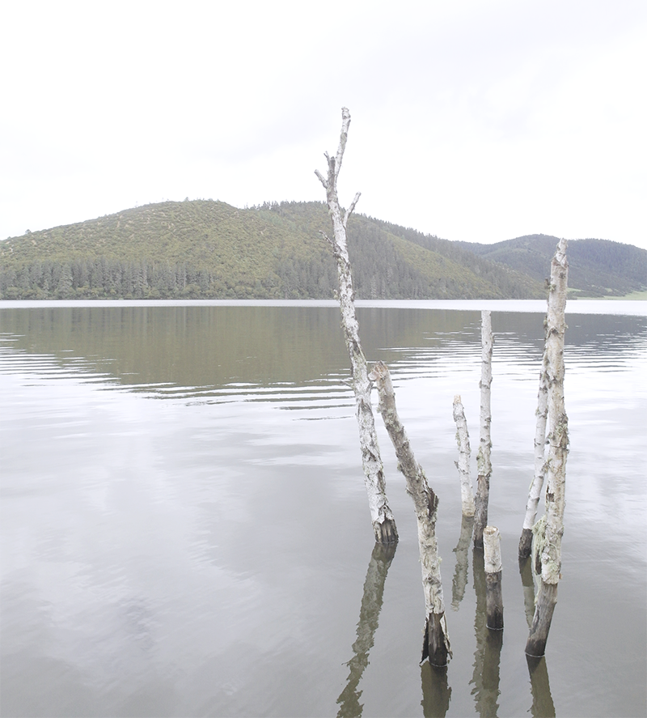
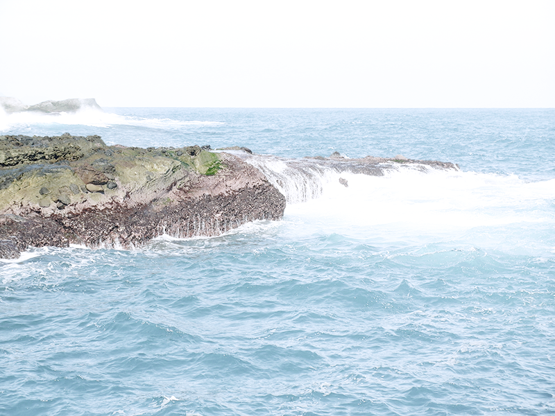

Sea
A sea is a large body of salt water that is surrounded in whole or in part by land, it also is an essential aspect of human trade, travel, mineral extraction, and power generation. This importance and duality has affected human culture.

The sea appears in human culture in contradictory ways, as both powerful but serene and as beautiful but dangerous. It has its place in mythology and religion, literature, art, poetry, film, theater, and music.